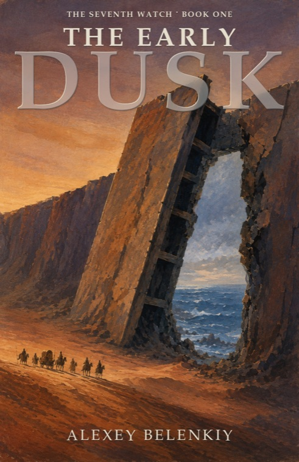
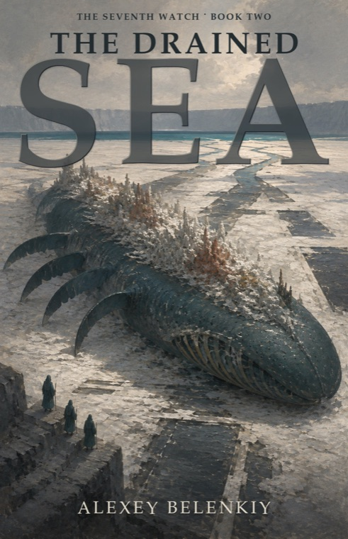
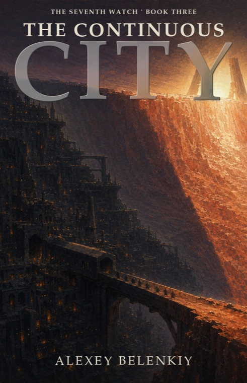
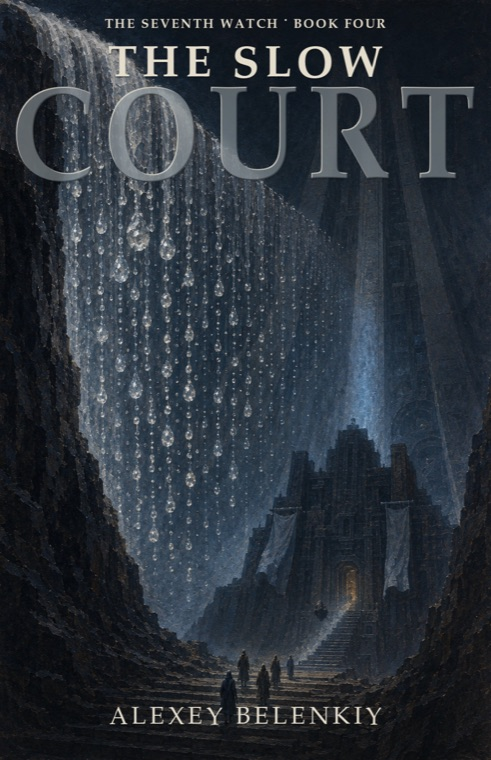
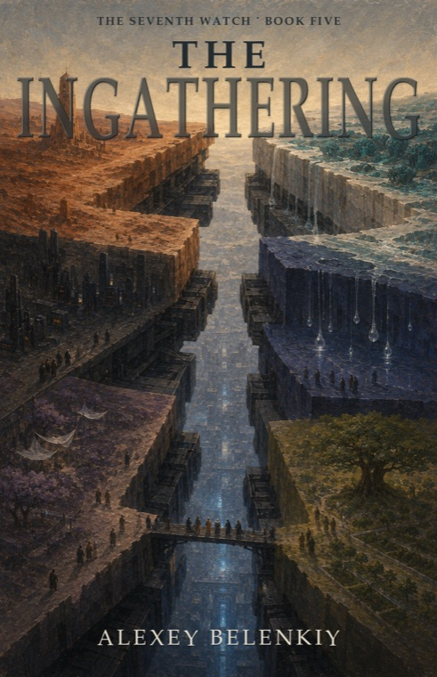

The Wheel
- An age wakes, builds, conquers and decays.
- Robed strangers arrive, singing, and the age is sung down to sleep.
- Six realms keep this Wheel. Each believes it is the whole world.

IKarsk
The Early Dusk
The age is ending early, and only one man has noticed the singers are ahead of schedule.

IIThe Sound
The Drained Sea
A civilisation inherits a seabed and learns why the water left.

IIIThe Kiln
The Continuous City
A city that has never once stopped building, and the survey that finds its outer wall.

IVThe Still
The Slow Court
A case older than the nation trying it, and the clerk who reads the first filing.

VAll realms
The Ingathering
The stagger fails. Two ages meet for the first time in twenty-eight thousand years.
The horizon is a seam.
I · Karsk · The Early Dusk
Start with Book One.
Six realms, each certain it is the whole world. One ship, twenty-eight thousand years into the dark.
II · The Sound
The Drained Sea
See the bookIII · The Kiln
The Continuous City
See the bookIV · The Still
The Slow Court
See the bookV · All realms
The Ingathering
See the bookVI · The seam
The Far Shore
See the book
The cycle is complete in six books.